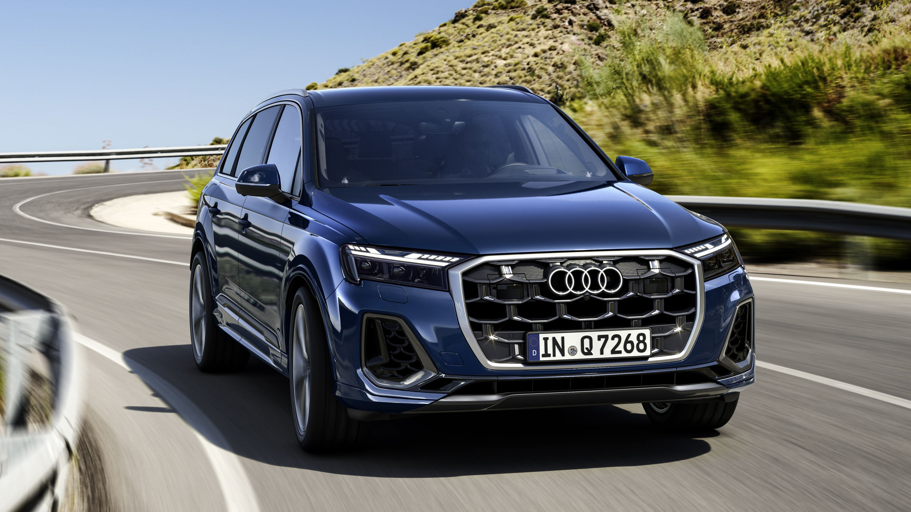

El Audi Q7 es un SUV de tamaño grande que combina lujo, tecnología y capacidad todo terreno. Introducido en 2005, el Q7 se ha convertido en uno de los SUV más reconocidos y deseables en su clase.

Características Principales
Espacio interior amplio y confortable.
Tecnología avanzada de tracción integral quattro.
Capacidad para siete pasajeros en tres filas de asientos.
Motorización potente con opciones de motor TFSI y TDI.
Paquete de suspensión neumática adaptativa disponible para un manejo aún más confortable.
Rendimiento y Versatilidad
El Audi Q7 ofrece un equilibrio impresionante entre rendimiento y comodidad, con características como el sistema de conducción dinámica Audi Drive Select, que permite al conductor ajustar la configuración del vehículo según las condiciones de manejo y las preferencias personales.
Tecnología Avanzada
El Q7 incluye el Virtual Cockpit de Audi, que proporciona una pantalla de información completamente digital y personalizable para el conductor, así como el sistema de navegación MMI Navigation Plus con MMI Touch para una interacción intuitiva.
Sistema de sonido Bang & Olufsen premium disponible.
Asistente de estacionamiento con vista de 360 grados.